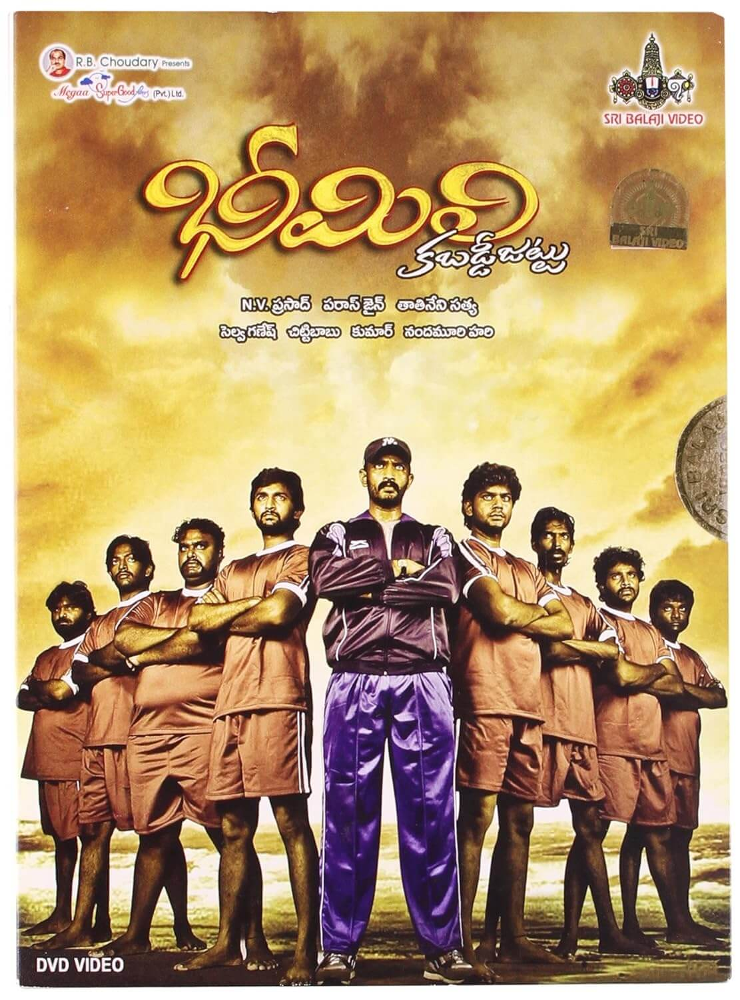
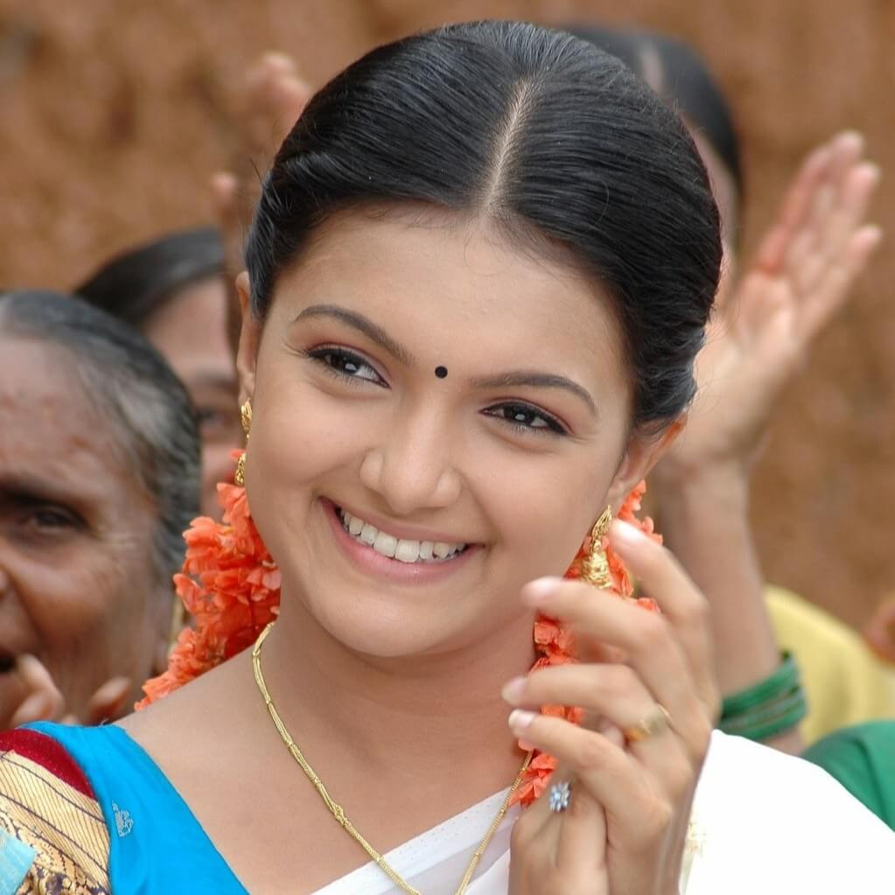

📅 Release Date: 9 July 2010
🌐 Languages: Telugu
🎭 Genre: Village Sports Drama
This is the director’s debut movie. Set in the coastal village of Bheemili near Vizag, the film follows Suri, a cheerful young man who dreams of helping his local kabaddi team achieve victory. Though the team is known for constantly losing, their determination grows stronger under proper coaching and teamwork. Alongside the sports journey, the film also explores Suri’s innocent love story and deep friendship with his teammates.
Suri

Prakash
Tatineni Satya
N. V. Prasad & Paras Jain
Megaa Super Good Films
V. Selvaganesh
Chitti Babu.K